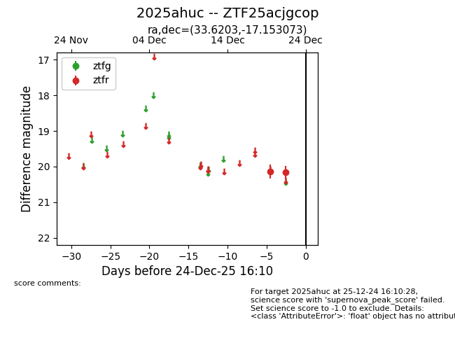
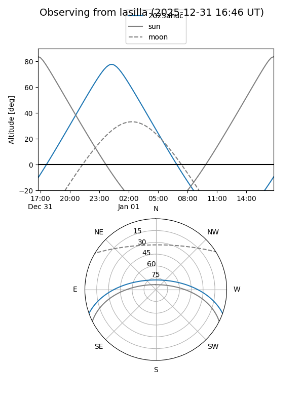
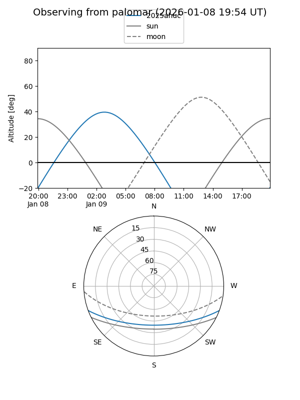

2025ahuc
Target 2025ahuc at 2025-12-22 14:03
Aliases and brokers:
FINK: fink-portal.org/ZTF25acjgcop
Lasair: lasair-ztf.lsst.ac.uk/objects/ZTF25acjgcop
ALeRCE: alerce.online/object/ZTF25acjgcop
TNS: wis-tns.org/object/2025ahuc
YSE: ziggy.ucolick.org/yse/transient_detail/2025ahuc
alt names
ZTF25acjgcop (ztf,fink_ztf)
2025ahuc (tns,yse)
Coordinates:
equatorial (ra, dec) = 33.6203,-17.15307
equatorial (HMS+DMS) = 02:14:28.87,-17:09:11.06
galactic (l, b) = (189.7658,-68.38263)
Flags:
Photometry:
last ztfr=20.14
1 ztfr detections
Lightcurve

Visibility


Additional plots